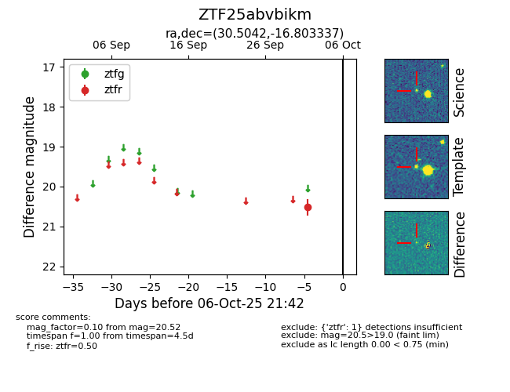

FINK: ZTF25abvbikm
Lasair: ZTF25abvbikm
ALeRCE: ZTF25abvbikm
ZTF25abvbikm (ztf,fink)
equatorial (ra, dec) = (30.5042,-16.80334)
galactic (l, b) = (184.2577,-70.68685)

last ztfr=20.52
1 ztfr detections